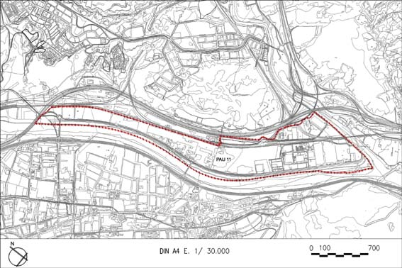

PAU 11 “Polígon de Sant Vicenç” (Polígon d’actuació urbanística PAU – 11)

Objectiu: Aquest polígon ja té constituïda la Junta de Compensació i presentat el Projecte d’Urbanització. Es delimita per tal de completar les obres d’urbanització i repartir equitativament les càrregues.
Règim del sòl: Sòl Urbà Consolidat
| Superficie del polígon: No hi ha terrenys de cessió. |
1.510.509m2s |
(St) Sostre total |
(Segons aplicació de paràmetres de cada zona ) |